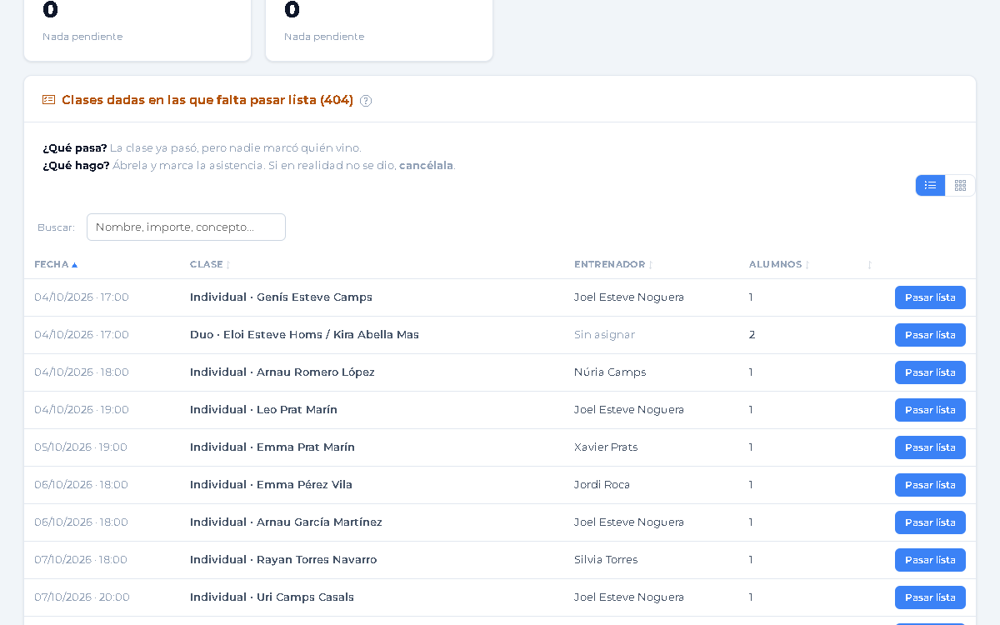
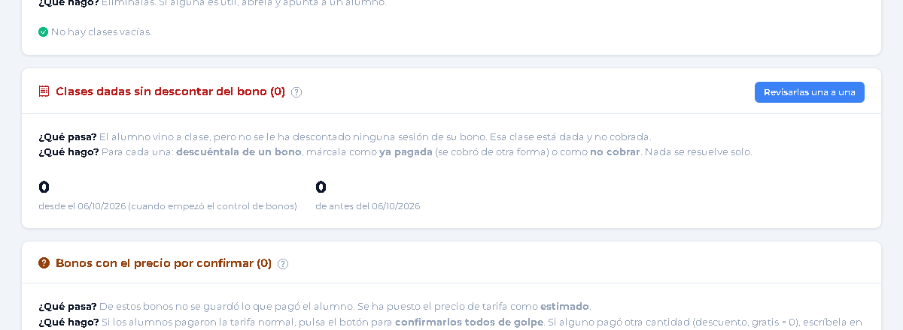
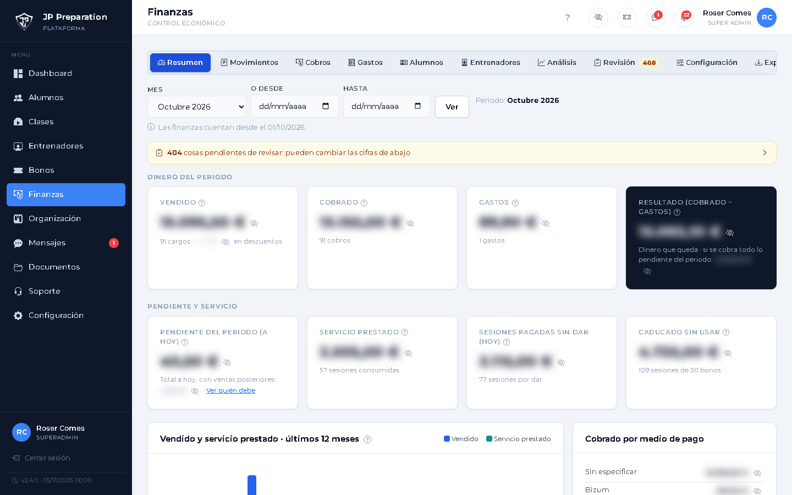
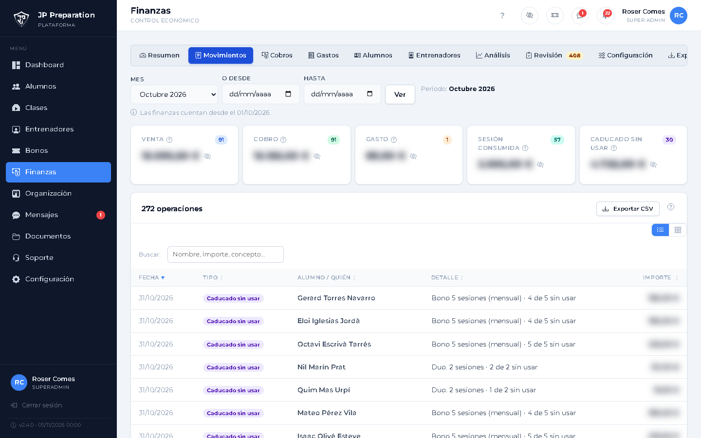
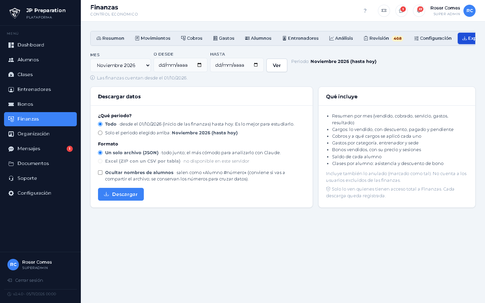

Revisión semanal y cierre de mes
Dejar las cuentas al día y pasar los números al gestor
Cada semana
La Revisión
El número de la pestaña dice cuántas cosas quedan por revisar. El objetivo es dejarla a cero.
Cada semana
Qué mirar
Falta pasar lista · falta cerrar la clase · sin entrenador · clases vacías · clases sin bono descontado · precio por confirmar.
Cada semana
Pasar lista y cerrar
Abre la clase: si se dio, pasa lista y ciérrala; si no se dio, cancélala.
Cada semana
Clases sin bono
Elige: saldar con un bono, «ya está pagada» (se cobró aparte) o «no cobrar».
A final de mes
Revisa el Resumen
Comprueba vendido, cobrado, gastos y resultado, y que todos los gastos del mes están apuntados.
A final de mes
Para el gestor
En Movimientos elige el mes y pulsa Exportar CSV: se abre con Excel.
A final de mes
O todos los datos
En la pestaña Exportar elige periodo y formato (JSON o ZIP de Excel). Si vas a compartirlo, marca Ocultar nombres.







Revisión
Los seis controles
Pasar lista
Clases sin bono
Cifras del mes
Exportar CSV
Exportar
Descargar
Cuentas al día
Una vez por semana: Revisión a cero